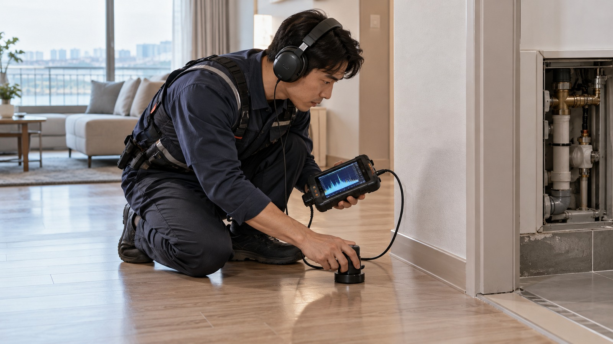

서울 중구 소공동 현장에서 해당 항목이 나타나는지 먼저 확인합니다.
LEAK · LOCAL SERVICE
서울 중구 소공동
서울 중구 소공동
누수탐지
서울 중구 소공동에서 누수탐지 관련 내용을 찾을 때는 현재 나타나는 증상과 현장 환경을 함께 확인하는 것이 좋습니다.

01 · OVERVIEW
서울 중구 소공동에서
서울 중구 소공동에서
먼저 확인할 내용
누수는 실제 물이 보이는 위치와 원인이 시작된 위치가 다를 수 있어 벽·천장·바닥의 흔적과 배관 구간을 함께 확인해야 합니다.
서울 중구 소공동 현장에서 해당 항목이 나타나는지 먼저 확인합니다.
서울 중구 소공동 현장에서 해당 항목이 나타나는지 먼저 확인합니다.
02 · CHECK PROCESS
누수탐지 확인 흐름
- 01누수 흔적과 발생 위치 확인
서울 중구 소공동의 실제 상태를 기준으로 필요한 범위를 순서대로 확인합니다.
- 02급수·난방 등 배관 가능 구간 점검
서울 중구 소공동의 실제 상태를 기준으로 필요한 범위를 순서대로 확인합니다.
- 03원인 후보와 확인 범위 구분
서울 중구 소공동의 실제 상태를 기준으로 필요한 범위를 순서대로 확인합니다.
03 · LOCAL POINT
서울 중구 소공동 현장 환경도
서울 중구 소공동 현장 환경도
함께 살펴봅니다.
같은 누수탐지 문제라도 아파트, 빌라, 단독주택, 상가 등 건물 형태와 설비 배치에 따라 확인해야 할 부분이 달라질 수 있습니다. 따라서 서울 중구 소공동에서도 증상 발생 위치와 사용 환경을 함께 확인해 필요한 범위를 구분하는 과정이 중요합니다.
04 · FAQ
누수탐지 자주 확인하는 내용
물이 보이는 곳이 누수 지점인가요?
물은 구조물이나 배관을 따라 이동할 수 있어 보이는 위치와 실제 원인이 다를 수 있습니다.
계량기도 확인해야 하나요?
급수 계통 누수가 의심되는 경우 사용하지 않는 상태에서 계량기 변화를 확인하는 것이 도움이 될 수 있습니다.
탐지 전에 무엇을 확인하면 좋나요?
처음 발견한 위치와 시기, 물 사용과의 관계, 반복 여부를 확인하면 원인 범위를 좁히는 데 도움이 됩니다.
AREA DIRECTORY
상위 지역으로 돌아가기 →